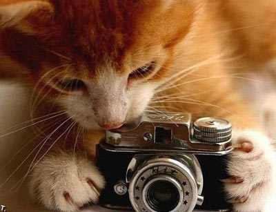
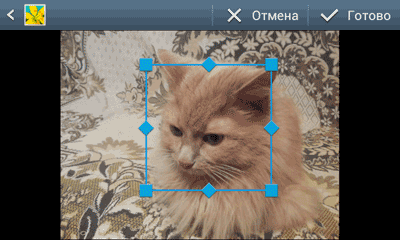
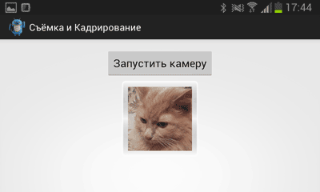

/* Моя кошка замечательно разбирается в программировании. Стоит мне объяснить проблему ей - и все становится ясно. */
John Robbins, Debugging Applications, Microsoft Press, 2000

/* Моя кошка замечательно разбирается в программировании. Стоит мне объяснить проблему ей - и все становится ясно. */
John Robbins, Debugging Applications, Microsoft Press, 2000

Программное включение приложения Камера
Делаем фотографии и сохраняем результат. Простой пример
Делаем фотографии или видео и сохраняем результат. Улучшенный пример
Снимаем и кадрируем
Практически все современные телефоны и планшеты снабжаются камерами, что позволяет фотографировать любимых котиков.
Вы можете программно запустить из своей программы системное приложение Камера (в этом случае вам не понадобятся дополнительные разрешения) через намерение.
Intent i = new Intent();
i.setAction(Intent.ACTION_CAMERA_BUTTON);
i.putExtra(Intent.EXTRA_KEY_EVENT, new KeyEvent(KeyEvent.ACTION_DOWN,
KeyEvent.KEYCODE_CAMERA));
sendOrderedBroadcast(i, null);
Просто включить камеру не слишком интересно. Рассмотрим практичный пример, когда мы программно запустим приложение Камеру, а полученную фотографию сохраним в папке. Для начала сфокусируемся на основной задаче, а потом напишем более сложное приложение.
Используйте статическую константу ACTION_IMAGE_CAPTURE из объекта MediaStore для создания намерения, которое потом нужно передать методу startActivityForResult(). Разместите на форме кнопку и ImageView, в который будем помещать полученный снимок. Этот код запускает стандартное приложение камеры. Полученное с камеры изображение можно обработать в методе onActivityResult():
public final int CAMERA_RESULT = 0;
Button FlashLightControl;
ImageView ivCamera;
FlashLightControl = (Button) findViewById(R.id.flashcontrol);
ivCamera = (ImageView) findViewById(R.id.iv_camera);
// Щелчок кнопки
public void CameraTurnClick(View v) {
Intent cameraIntent = new Intent(MediaStore.ACTION_IMAGE_CAPTURE);
startActivityForResult(cameraIntent, CAMERA_RESULT);
}
@Override
protected void onActivityResult(int requestCode, int resultCode, Intent data) {
if (requestCode == CAMERA_RESULT) {
Bitmap thumbnail = (Bitmap) data.getExtras().get("data");
ivCamera.setImageBitmap(thumbnail);
}
}
Данный код запустит активность для управления камерой, позволяя пользователю поменять настройки изображения, что освобождает вас от необходимости создавать своё собственное приложение для этих нужд.
При тестировании примера на своём телефоне я обнаружил небольшую проблему - когда снимок передавался обратно на моё приложение, то оно находилось в альбомном режиме, а потом возвращалось в портретный режим. При этом полученный снимок терялся. Поэтому перед нажатием кнопки я поворачивал телефон в альбомный режим, чтобы пример работал корректно. Поэтому вам надо предусмотреть подобное поведение, например, запретить приложению реагировать на поворот и таким образом избежать перезапуска Activity.
По умолчанию фотография возвращается в виде объекта Bitmap, содержащего миниатюру. Этот объект находится в параметре data, передаваемом в метод onActivityResult(). Чтобы получить миниатюру в виде объекта Bitmap, нужно вызвать метод getParcelableExtra() из намерения, передав ему строковое значение data.
Если вы укажете исходящий путь URI с помощью параметра MediaStore.EXTRA_OUTPUT в запущенном намерении, полноразмерное изображение, снятое камерой, сохранится в заданном месте. В таком случае в метод onActivityResult() не будет передана миниатюра, а итоговое намерение продемонстрирует значение null.
В следующем примере показано, как при создании снимка получать миниатюру или полноценное изображение, используя намерение.
private static int TAKE_PICTURE = 1;
private Uri outputFileUri;
private void getThumbailPicture() {
Intent intent = new Intent(MediaStore.ACTION_IMAGE_CAPTURE);
startActivityForResult(intent, TAKE_PICTURE);
}
private void saveFullImage() {
Intent intent = new Intent(MediaStore.ACTION_IMAGE_CAPTURE);
File file = new File(Environment.getExternalStorageDirectory(),
"test.jpg");
outputFileUri = Uri.fromFile(file);
intent.putExtra(MediaStore.EXTRA_OUTPUT, outputFileUri);
startActivityForResult(intent, TAKE_PICTURE);
}
@Override
protected void onActivityResult(int requestCode,
int resultCode, Intent data) {
if (requestCode == TAKE_PICTURE) {
Uri imageUri = null;
// Check if the result includes a thumbnail Bitmap
if (data != null) {
if (data.hasExtra("data")) {
Bitmap thumbnail = data.getParcelableExtra("data");
// TODO Какие-то действия с миниатюрой
}
}
else {
// TODO Какие-то действия с полноценным изображением,
// сохраненным по адресу outputFileUri
}
}
}
Поняв основы, можно усложнить пример.
Предположим, вы создали специальную службу, которая отслеживает бездомных котов и сотрудники вашей организации привозят им подарки, а также гладят их. Пользователи, которые скачали ваше приложение, должны сфотографировать кота, а затем информация о месте съёмки и другие параметры попадают к вам в центр для обработки. Фотографирование котов - это часть вашего приложения. Не обязательно придумывать велосипед и работать напрямую с функциями камеры. У вас уже есть системное приложение Камера, с помощью которого можно быстро сделать фотографию и получить результат обратно в приложение.
Сначала сделаем небольшие приготовления. Есть класс устройств, у которых нет камер, например, электронные ридеры. Чтобы пользователи этих устройств не скачивали зря ваше приложение, которое окажется для них бесполезным, пропишем в манифесте требование наличия камеры.
<uses-feature android:name="android.hardware.camera" android:required="true" />
Оформим отдельную функцию для запуска намерения.
private void dispatchTakePictureIntent(int actionCode) {
Intent takePictureIntent = new Intent(MediaStore.ACTION_IMAGE_CAPTURE);
startActivityForResult(takePictureIntent, actionCode);
}
Этот код запускает стандартное приложение камеры. Полученное с камеры изображение можно обработать в методе onActivityResult().
На всякий случай напишем функцию для проверки возможности приложением обрабатывать ваше намерение:
public static boolean isIntentAvailable(Context context, String action) {
final PackageManager packageManager = context.getPackageManager();
final Intent intent = new Intent(action);
List<ResolveInfo> list =
packageManager.queryIntentActivities(intent, PackageManager.MATCH_DEFAULT_ONLY);
return list.size() > 0;
}
Данная функция поможет нам во время загрузки приложения проверить наличие подходящего намерения. Если подходящего приложения не найдётся, то мы можем сделать кнопку для съёмки недоступной.
Системное приложение Камера кодирует фото в возвращаемом намерении, которое поступает в метод onActivityResult() в виде небольшого Bitmap в ключе data. Следующий код получает изображение и выводит его в ImageView.
private void handleSmallCameraPhoto(Intent intent) {
Bundle extras = intent.getExtras();
mImageBitmap = (Bitmap) extras.get("data");
mImageView.setImageBitmap(mImageBitmap);
}
Полученное миниатюрное изображение из "data" вполне годится для использования в качестве аватара в контактах. Если мы хотим получить полноразмерное изображение, то напишем дополнительный код для другой кнопки.
Чтобы приложение Камера сохраняло полноразмерные фотографии, нам нужно сообщить ему имя файла для сохранения и его полный путь.
В Android 2.2 и выше (API 8) есть специальный метод, чтобы получить стандартный путь для фотографий:
storageDir = new File(
Environment.getExternalStoragePublicDirectory(
Environment.DIRECTORY_PICTURES
),
getAlbumName()
);
Для более ранних версий Android, вы должны ввести имя директории фото самостоятельно:
storageDir = new File (
Environment.getExternalStorageDirectory()
+ PICTURES_DIR
+ getAlbumName()
);
Необходимо позаботиться об уникальности имени файла, чтобы избежать конфликтов:
private File createImageFile() throws IOException {
// Create an image file name
String timeStamp =
new SimpleDateFormat("yyyyMMdd_HHmmss").format(new Date());
String imageFileName = JPEG_FILE_PREFIX + timeStamp + "_";
File image = File.createTempFile(
imageFileName,
JPEG_FILE_SUFFIX,
getAlbumDir()
);
mCurrentPhotoPath = image.getAbsolutePath();
return image;
}
В нашем примере имя файла формируется из даты, что позволяет не бояться создания дубликатов.
Если у нас есть место для сохранения изображения, то сообщите путь приложению камеры через намерение:
File f = createImageFile();
takePictureIntent.putExtra(MediaStore.EXTRA_OUTPUT, Uri.fromFile(f));
При создании фото через намерение вы должны знать, где будет расположено ваше изображение, потому что вам нужно указать, куда его сохранять. Можно пойти другим путём - сделать фотографию доступной для системы при помощи Media Provider.
Следующий пример демонстрирует метод вызова системного медиа-сканера, чтобы добавить вашу фотографию в базу данных Media Provider, что сделает её видимой в приложении Галерея и других приложениях.
private void galleryAddPic() {
Intent mediaScanIntent = new Intent(Intent.ACTION_MEDIA_SCANNER_SCAN_FILE);
File f = new File(mCurrentPhotoPath);
Uri contentUri = Uri.fromFile(f);
mediaScanIntent.setData(contentUri);
this.sendBroadcast(mediaScanIntent);
}
Работа с большими изображениями может вызвать проблемы на устройстве с ограниченным объемом памяти. Если ваше приложение вызывает нехватку памяти после вывода нескольких изображений, вы можете значительно уменьшить объем занимаемой памяти, использовав во время распаковки JPEG-файлов в память масштабирование, которое учитывает размеры вашего View для просмотра картинок:
private void setPic() {
// Get the dimensions of the View
int targetW = mImageView.getWidth();
int targetH = mImageView.getHeight();
// Get the dimensions of the bitmap
BitmapFactory.Options bmOptions = new BitmapFactory.Options();
bmOptions.inJustDecodeBounds = true;
BitmapFactory.decodeFile(mCurrentPhotoPath, bmOptions);
int photoW = bmOptions.outWidth;
int photoH = bmOptions.outHeight;
// Determine how much to scale down the image
int scaleFactor = Math.min(photoW/targetW, photoH/targetH);
// Decode the image file into a Bitmap sized to fill the View
bmOptions.inJustDecodeBounds = false;
bmOptions.inSampleSize = scaleFactor;
bmOptions.inPurgeable = true;
Bitmap bitmap = BitmapFactory.decodeFile(mCurrentPhotoPath, bmOptions);
mImageView.setImageBitmap(bitmap);
}
Кроме того, в учебном примере рассматривается вывод видео в элемент VideoView. Изучайте код самостоятельно.
Рассмотрим ещё один пример, когда мы запустим приложение Камера, а также включим режим кадрирования. Обратите внимание, что основная часть кода остаётся прежней. Я специально даю разные примеры с незначительными изменениями, чтобы вы могли выбрать подходящие приёмы для вашей задачи. Также рекомендую проверять работу с камерой на реальных устройствах, так как многие производители заменяют стандартные метода съёмки своими прошивками и драйверами. В частности, намерение с кадрированием является проблемной и в интернете многие жалуются на отсутствие поддержки этого способа.
Создадим простенький макет из кнопки для запуска камеры и ImageView для вывода кадрированного изображения.
<LinearLayout xmlns:android="http://schemas.android.com/apk/res/android"
xmlns:tools="http://schemas.android.com/tools"
android:layout_width="match_parent"
android:layout_height="match_parent"
android:orientation="vertical"
android:paddingBottom="@dimen/activity_vertical_margin"
android:paddingLeft="@dimen/activity_horizontal_margin"
android:paddingRight="@dimen/activity_horizontal_margin"
android:paddingTop="@dimen/activity_vertical_margin"
tools:context=".MainActivity" >
<Button
android:id="@+id/buttonCapture"
android:layout_width="wrap_content"
android:layout_height="wrap_content"
android:layout_gravity="center"
android:onClick="onClick"
android:text="Запустить камеру" />
<ImageView
android:id="@+id/picture"
android:layout_width="wrap_content"
android:layout_height="wrap_content"
android:layout_gravity="center"
android:background="@drawable/background" />
</LinearLayout>
Для большей красоты сделаем задний фон у ImageView с закруглёнными углами и обводкой. Для этого в атрибуте android:background мы прописали специальный стиль. Создайте папку res/drawable, а в ней файл background.xml следующего содержания:
<shape xmlns:android="http://schemas.android.com/apk/res/android"
android:dither="true" >
<gradient
android:angle="90"
android:centerColor="#00000000"
android:endColor="#99ffffff"
android:startColor="#99ffffff" />
<padding
android:bottom="10dp"
android:left="10dp"
android:right="10dp"
android:top="10dp" />
<corners android:radius="5dp" />
<stroke
android:width="2dp"
android:color="#ccffffff" />
</shape>
Этот шаг не является обязательным и его можно пропустить.
При нажатии кнопки запускаем приложение Камера и ожидаем результата.
public void onClick(View v) {
try {
// Намерение для запуска камеры
Intent captureIntent = new Intent(MediaStore.ACTION_IMAGE_CAPTURE);
startActivityForResult(captureIntent, CAMERA_CAPTURE);
} catch (ActivityNotFoundException e) {
// Выводим сообщение об ошибке
String errorMessage = "Ваше устройство не поддерживает съемку";
Toast toast = Toast
.makeText(this, errorMessage, Toast.LENGTH_SHORT);
toast.show();
}
}
После того, как пользователь сделал нужный кадр, программа Камера возвращает результат обратно в наше приложение. Результат обрабатывается в методе onActivityResult():
protected void onActivityResult(int requestCode, int resultCode, Intent data) {
if (resultCode == RESULT_OK) {
// Вернулись от приложения Камера
if (requestCode == CAMERA_CAPTURE) {
// Получим Uri снимка
picUri = data.getData();
// кадрируем его
performCrop();
}
// Вернулись из операции кадрирования
else if(requestCode == PIC_CROP){
Bundle extras = data.getExtras();
// Получим кадрированное изображение
Bitmap thePic = extras.getParcelable("data");
// передаём его в ImageView
ImageView picView = (ImageView)findViewById(R.id.picture);
picView.setImageBitmap(thePic);
}
}
}
Получив полноразмерное изображение, мы пытаемся откадрировать его. Для этого создадим метод performCrop(), который запускает специальное намерение, предназначенное для этих целей. В успешном случае результат снова возвращается в наше приложение, но уже с другим кодом PIC_CROP. Теперь мы имеет нужное изображение, которое можно вывести на экран.
При кадрировании мы указываем желаемые размеры (код метода ниже). Если указать слишком больше размеры (больше 400), то результат не возвращается. Попробуйте добавить ещё два параметра:
//куда сохраняем
intent.putExtra("output", picUri);
intent.putExtra("outputFormat", "JPEG");
Результат работы приложения, когда запускается намерение кадрирования и итоговый результат. Желательно тренироваться на кошках.


Исходник полностью.
package ru.alexanderklimov.test;
import android.app.Activity;
import android.content.ActivityNotFoundException;
import android.content.Intent;
import android.graphics.Bitmap;
import android.net.Uri;
import android.os.Bundle;
import android.provider.MediaStore;
import android.view.View;
import android.widget.ImageView;
import android.widget.Toast;
public class MainActivity extends Activity {
final int CAMERA_CAPTURE = 1;
final int PIC_CROP = 2;
private Uri picUri;
@Override
protected void onCreate(Bundle savedInstanceState) {
super.onCreate(savedInstanceState);
setContentView(R.layout.activity_main);
setTitle("Съёмка и Кадрирование");
}
public void onClick(View v) {
try {
// Намерение для запуска камеры
Intent captureIntent = new Intent(MediaStore.ACTION_IMAGE_CAPTURE);
startActivityForResult(captureIntent, CAMERA_CAPTURE);
} catch (ActivityNotFoundException e) {
// Выводим сообщение об ошибке
String errorMessage = "Ваше устройство не поддерживает съемку";
Toast toast = Toast
.makeText(this, errorMessage, Toast.LENGTH_SHORT);
toast.show();
}
}
protected void onActivityResult(int requestCode, int resultCode, Intent data) {
if (resultCode == RESULT_OK) {
// Вернулись от приложения Камера
if (requestCode == CAMERA_CAPTURE) {
// Получим Uri снимка
picUri = data.getData();
// кадрируем его
performCrop();
}
// Вернулись из операции кадрирования
else if(requestCode == PIC_CROP){
Bundle extras = data.getExtras();
// Получим кадрированное изображение
Bitmap thePic = extras.getParcelable("data");
// передаём его в ImageView
ImageView picView = (ImageView)findViewById(R.id.picture);
picView.setImageBitmap(thePic);
}
}
}
private void performCrop(){
try {
// Намерение для кадрирования. Не все устройства поддерживают его
Intent cropIntent = new Intent("com.android.camera.action.CROP");
cropIntent.setDataAndType(picUri, "image/*");
cropIntent.putExtra("crop", "true");
cropIntent.putExtra("aspectX", 1);
cropIntent.putExtra("aspectY", 1);
cropIntent.putExtra("outputX", 256);
cropIntent.putExtra("outputY", 256);
cropIntent.putExtra("return-data", true);
startActivityForResult(cropIntent, PIC_CROP);
}
catch(ActivityNotFoundException anfe){
String errorMessage = "Извините, но ваше устройство не поддерживает кадрирование";
Toast toast = Toast.makeText(this, errorMessage, Toast.LENGTH_SHORT);
toast.show();
}
}
}
Написано на основе этого примера.